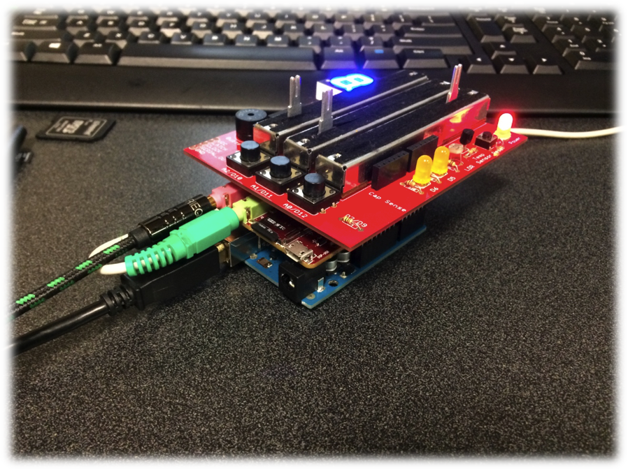

Danger Shield Demo!
Just for kicks a while back, I wrote a bit of code that uses the DSP Shield in “shield mode” and a danger shield. Stack a danger shield on the included system and look at the serial port on the Arduino to see what’s happening. You’ll need a music source of course, going into the DSP’s pink input jack and speakers or headphones connected to the green output jack.
Slider A0 controls the center frequency, A1 controls the bandpass filter width and A2 controls the DSP output volume.
The necessary code to tweak it (requires some Arduino libraries too) is on github at: https://github.com/wespo/FIR_DangerShield
The Arduino libraries are at: https://github.com/wespo/mailbox https://github.com/wespo/DSPShield
The DSP Shield app binary shouldn’t be needed, but can be re-downloaded from bootimg.bin at: https://github.com/wespo/DSP-Shield-Mode-Application
